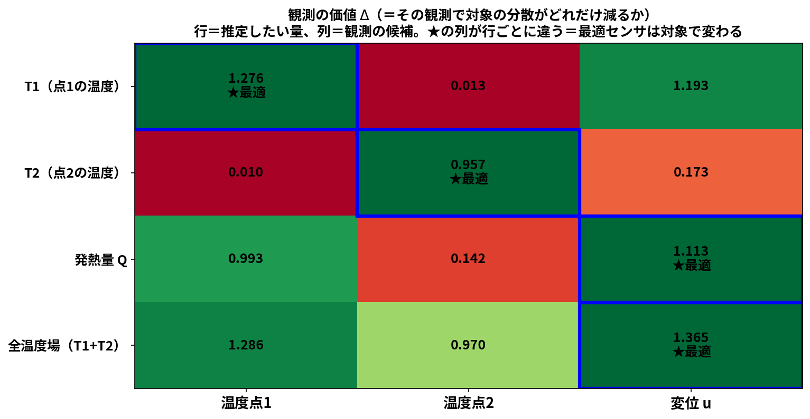

少数の温度・変位観測から
熱変形を推定する
― OpenFOAM＋FrontISTR＋データ同化のオープンソース実装 ―
ヤマザキマザック株式会社 楠村 拓也
オープンCAE学会シンポジウム B-16
2026年11月12日（木）
はじめに
- 工作機械の加工誤差では熱変位が約40〜70 %を占め、最大の誤差要因となる。
- 対策には熱設計・温度制御・モデル補償があるが、補償には熱変形を正確に予測する必要がある。
- 熱解析や熱流体解析を用いても、温度勾配・熱伝達率・複数の時定数を完全に再現することは難しく、 温度の傾向が合ってもTCP変位が合わない場合がある。

温度変化（熱電対による測温点の温度）

変位の変形具合と変位のグラフ（誇張表示）
目的
- 数値モデルだけでは、初期条件や境界条件の不確かさのために現実を再現しきれない
- そこで限られた温度・変位の観測と数値モデルを統合するデータ同化を用いる

題材：片側ヒータ付き中空円筒（鋼、固体20,696セル）。15 W を 0〜300 s 投入し冷却。 でたらめな初期状態（誤差9.3 K）から、温度2点の観測だけで 同化なしは12.7 Kまで悪化する一方、同化ありは0.24 Kまで補正される
データ同化とは
シミュレーションと実測を、それぞれの確からしさで重み付けして融合し、測っていない量まで推定する枠組み。

実際のEnKF計算。予報（青破線）はモデルで進むあいだ真値から離れ分散も広がるが、観測（緑）が来るたびに解析（赤）が引き戻し、分散が縮む
データ同化の種類と、今回の選択
| 分類 | 手法 | 考え方 | 特徴 |
|---|---|---|---|
| 逐次 データ同化 観測が来るたび その場で更新 |
OI（最適内挿） | 共分散 \(B\) を固定したまま使う（時間発展させない） | 最も軽い・仕組みが明快 パラメータ推定は苦手 |
| カルマンフィルタ | 物理モデルで共分散そのものを逐次計算する \( P^f_k = M\,P^a_{k-1}M^{\mathsf T}+Q \) （\(M\)＝モデルの線形化） |
線形・ガウスなら最適 高次元では \(P\) が巨大で扱えない | |
| EnKF（アンサンブル） | 上の \(P\) を直接持たず、各メンバーを前進させ、アンサンブル平均からの偏差で標本共分散として計算する \( P^f\simeq\dfrac{1}{N-1}\,dZ\,dZ^{\mathsf T},\quad dZ^{(m)}=z^{(m)}-\bar z \) |
高次元でも少数メンバーで済む パラメータも同時推定できる | |
| 粒子フィルタ | 重み付き粒子で分布そのものを表す | 非ガウス・多峰でもOK 高次元で粒子が縮退 | |
| 変分法 時間窓全体を まとめて最適化 |
3D-Var | ある時刻の評価関数 \(J(x)\) を最小化 | 共分散を陽に持たなくてよい |
| 4D-Var | 時間窓全体で \(J\) を最小化 | 精度が高い 随伴コードの実装が必要 |
熱伝導は線形・誤差はガウス → 変分法の随伴は不要。粒子フィルタは400粒子でも有効粒子数1.02個まで縮退
OpenFOAM から FrontISTR へ ― 節点補間と双子実験
CFDはセル中心、FEMは節点に値を持つ。逆距離加重（IDW）で温度を節点へ写像した。

①有限体積法はセル中心、有限要素法は節点に値を置くので位置がずれる。 ②1つの節点について近い \(k\) 個のセルを距離の逆数で加重平均する
これを使うと何ができるか
- OpenFOAMの熱流体固体連成（CHT）で求めた温度をFrontISTRへ引き継ぎ、 熱膨張（熱変位）まで一気通貫で計算できる
- CHTは流体そのものを解くので、熱伝達率を仮定せずに済む （対流が自然に決まる。輻射も同じ枠組みで扱える ― 本ケースはOFF）
- 逆に、計算後に壁面熱流束と壁面温度から熱伝達率を診断することもできる
| 項目 | 本ケースの値 |
|---|---|
| 補間に使う近傍数 | \(k=8\) |
| 近傍セルまでの距離 | 2.32 〜 4.19 mm |
| 近傍セルの温度 | 24.16 〜 24.63 ℃ |
| 加重平均の結果 | 24.413 ℃ |
| 規模 | CFD 20,696セル → FEM 5,040節点 |
人工的にノイズを載せた観測を作って双子実験（正解が分かる検証）とした
課題① OIでは発熱量が当たらない
状態を拡大して \( x=(T_1,\dots,T_5,\;Q,\;h)^{\mathsf T} \) とし、共分散 \(B\) を固定したOIを実ソルバ（20,696セル）で実行した。

温度は真値に追従する（最終RMSE 0.090〜0.113 K）が、発熱量 \(Q\) は 8.8〜9.0 W（真値15 W）で頭打ち。 \(\sigma_Q\) を4条件振っても改善しない
実際の \(s\) は時間とともに変わるのに固定のまま。\(\sigma_Q\) を大きくしても\(Q\)は9 W付近で頭打ち
課題② EnKFは当たるが計算コストが大きい
EnKFは共分散を行列で持たず、少しずつ条件の違うメンバー（分身）を並行して前進させ、そのばらつきから共分散を作る。

A：60本のメンバーを前進させる。B：初期は温度と \(Q\) が無相関（丸い雲）。 C：前進させるだけで斜めに伸びる＝連動が生まれる。この連動が共分散 \( P\simeq dZ\,dZ^{\mathsf T}/(N-1) \) で、 温度しか測らなくても \(Q\) が動く（温度1点だけで \(Q=15.95\) W、真値15 W）
課題の整理と、本研究での解決
ここまでで分かった課題
(2) どこの温度を観測するかの基準がない
本研究で行ったこと
→ 0→600 s が 31 ms（分オーダー → ミリ秒）
→ 同じ変位2点でも 2.43 K と 0.86 K
低次元モデル化 ― POD
温度場スナップショット（20,696セル × 121時刻）を特異値分解し、場の「型」を抽出した。 \( X=\sigma_1 u_1 v_1^{\mathsf T}+\sigma_2 u_2 v_2^{\mathsf T}+\cdots \)

モード1（91.8 %）＝全体が一様に昇温する型／モード2（8.08 %）＝ヒータ側と反対側の温度差／モード3（0.11 %）＝ほぼ効かない
実装は numpy で3行。物理の知識は一切与えていない
代表点の選択 ― Q-DEIM

赤＝新しく追加、灰＝すでに選んだ点。1点目はヒータ最近傍ではなく中央高さ、 2点目は反対側、4・5点目で底面へ ― 場を広く覆うように広がる

左：1点足すごとにまだ説明できていない情報が減り、5点でゼロ。 右：5点だけ測って全20,696セルの温度場を復元したときの誤差の分布（ランダム200通り）
scipy.linalg.qr(..., pivoting=True) と完全に一致 ＝ 枢軸付きQR分解そのもの全20,696セルの復元温度RMSEで比較すると Q-DEIM 0.00081 K／ランダム中央値 0.00220 K／ランダム最悪 1.396 K（約1700倍） ― 価値は「大外れを確実に避ける」こと
ROMの構築と校正
選んだ5点上で集中定数モデルを組み、係数 \(C_i, K_{ij}, h\) をOpenFOAM結果に合うよう最小二乗で校正した。 \( C_i\dfrac{dT_i}{dt}=\sum_j K_{ij}(T_j-T_i)+q_i(t)-h(T_i-T_{\mathrm{air}}) \)

5ノードと結合コンダクタンス \(K_{ij}\)（P0-P2が最強）

校正したROMはCHTの温度履歴をほぼ再現
分身200個 × 10サイクルでも数十秒 ＝ EnKFが現実的な時間で回るようになった
結果① 温度が精度よく再現できる
でたらめな初期状態から出発し、少数の温度観測だけでROM＋EnKFを回した。

同化を重ねるごとに全点温度RMSEが下がる。観測ノイズ（0.3 K）を下回る水準まで到達する
結果② 5点から温度分布を復元する
gappy-POD により、代表5点の測定値から全20,696セルを再構成する。手順は2ステップだけ。
| 手順 | やること | 行列サイズ |
|---|---|---|
| ① | 5点を測り、平均を引く \( T_P-\bar u_P \) | 5×1 |
| ② | 5元連立を解いて係数を出す \( a=(U_{r,P})^{-1}\,(T_P-\bar u_P) \) | (5×5)⁻¹ ×(5×1) → 5×1 |
| ③ | 全セルへ伸ばす \( \hat T=\bar u+U_r\,a \) | (20,696×5)×(5×1) → 20,696×1 |
\(U_{r,P}\)＝選んだ5点の行だけを抜いたモード行列（5×5）。 \(U_r\)＝全セル分のモード行列（20,696×5）。
セル \(c\) 1個に着目すると
\( \hat T_c=\bar u_c+a_1\varphi_1[c]+a_2\varphi_2[c]+\cdots \)
＝ 「そのセルのモード値」×「5点で決めた割合 \(a\)」の足し算。
測っていないセルも、モードを通して値が決まる。

マゼンタの5点だけを測り、
そこから全場を復元したアニメーション
Q-DEIMが「連立が解ける5点」を選んでいるから、\(U_{r,P}\) が特異にならない
結果③ 温度から熱変形へ
復元した温度場をFrontISTRの熱弾性へ渡し、未観測の変位を推定した。

黒太線＝FrontISTR真値。同化なし4.585 K／温度1点（低感度）1.036 K／温度2点 0.503 K／ 温度2点＋変位2点 0.160 K（変位差誤差も 0.165 µm）
実務では温度→変位を毎回FEMで解かず、線形化した感度 \(W=K_s^{-1}H_T\) で直接変位を出せる
熱感度による観測点の選択
FrontISTRで熱感度 \(W=K_s^{-1}H_T\) を1度だけ求め、その行ノルムが大きい点に変位センサを置いた。

同じ「変位2点」でも置く場所で効果が変わる。 同化なし 5.27 K ／ 温度のみ 3.52 K ／ 低W 2.43 K ／ 高W 0.86 K
底面は拘束されて動けないため、測っても情報が少ない
結果④ 観測を増やすほど精度が上がる
温度1点 → 温度2点 → ＋変位2点 と観測を増やし、ROM＋EnKF（5 seed平均）で比較した。

どこで観測しているか（温度：赤・青／変位：橙・灰）

温度RMSE 0.617 → 0.197 → 0.159 K／未観測の変位差誤差 0.869 → 0.151 → 0.077 µm
変位は高感度Wの点に置くほど効く（低W 0.104 µm → 高W 0.077 µm）
観測の価値を1本の式で測る
「どこに置くか」は、観測がもたらす分散の減少量で定量化できる。 \( \Delta(X,y)=\dfrac{\mathrm{Cov}(X,y)^2}{\mathrm{Var}(y)+r} \)

行＝推定したい量、列＝観測の候補。★の列が行ごとに違う （\(T_1\)→温度点1、\(T_2\)→温度点2、\(Q\)と全温度場→変位）
感度が高い点を並べるのは逆効果。近接2点は相関1.00000で条件数が30万倍悪化する
まとめ
| 段階 | やったこと | 結果 |
|---|---|---|
| 連携 | OpenFOAM(CHT) → 節点補間 → FrontISTR(熱弾性) | 温度・変形・面ごとの熱伝達率を算出し、双子実験の真値とした |
| 同化 | OI／EnKFで温度・変位を同化 | 実ソルバOIは \(Q\)=8.9 W止まり → EnKFで15.95 W |
| 低次元化 | PODで場を2モードに圧縮（99.9 %） | 0→600 s が31 ms（実ソルバは分オーダー） |
| 代表点 | Q-DEIMで5点を自動選定しROMを校正 | 校正残差 0.0142 K、大外れ（1.4 K）を確実に回避 |
| 観測設計 | 熱感度 \(W\) と観測の価値 \(\Delta\) で配置を決定 | 同化なし 4.59 K → 0.16 K（約29倍） |
さらに「どこを・何で・いつ測るか」を、推定対象ごとに定量的に設計できるようになった
限界と今後／公開情報
正直な限界
- 放熱 \(h\) は推定が難しい。温度応答（0.05 K）が観測ノイズ（0.30 K）より小さい
- Q-DEIM点は「復元に良い点」であり、推定に最適な保証はない
- ROMは訓練した運転条件でのみ有効。加熱位置が変われば作り直しが要る
- 比較は候補内のものであり、大域最適の証明ではない
今後
- 実機形状・実測データへの適用（現在は双子実験）
- 設置制約を入れた制約付き最適配置
- OpenModelica との連成（FMI/FMU）による1D-CAEとの統合
公開情報
| 内容 | 場所 |
|---|---|
| リポジトリ | github.com/kamakiri1225/ thermal-da-demo |
| 解説記事（全5回） | kamakiri1225.github.io/ thermal-da-demo/ |
| blog_001 | CHT → 熱膨張、熱伝達率の分布 |
| blog_002 | OI ― 数式と3点モデルの手計算 |
| blog_003 | EnKF ― 分身の散らばりで共分散を作る |
| blog_004 | POD で代表点をデータから選ぶ ROM |
| blog_005 | 推定対象で最適センサは変わる |
ご清聴ありがとうございました